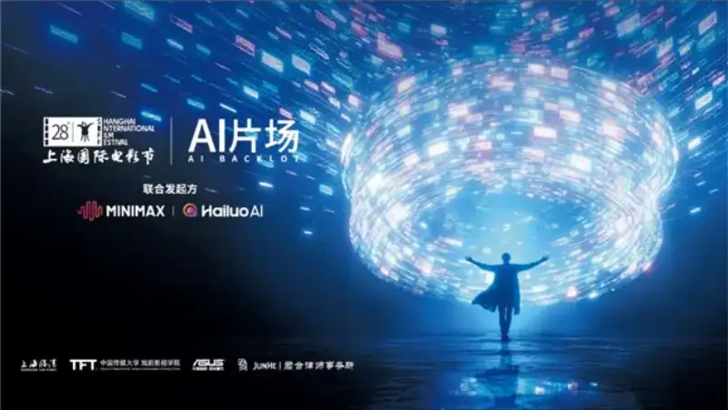
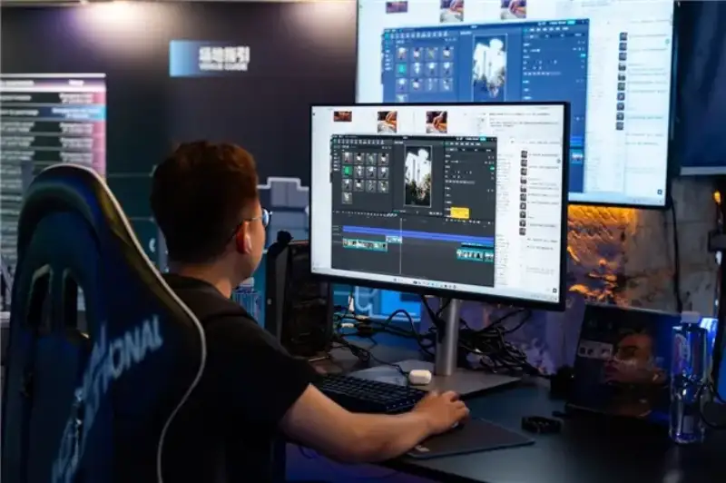
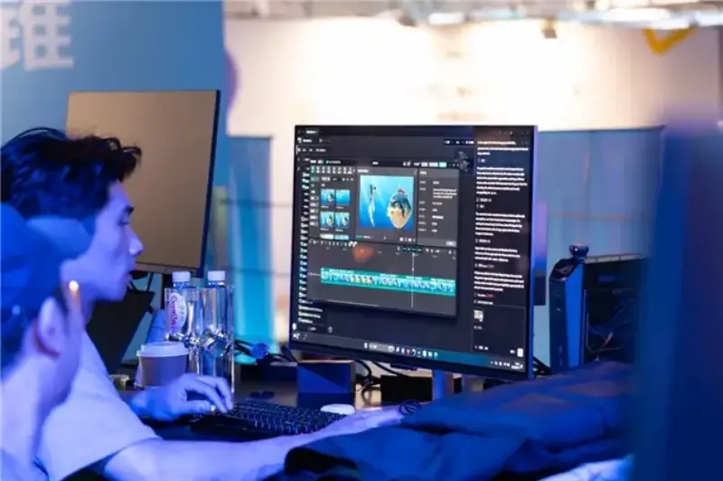
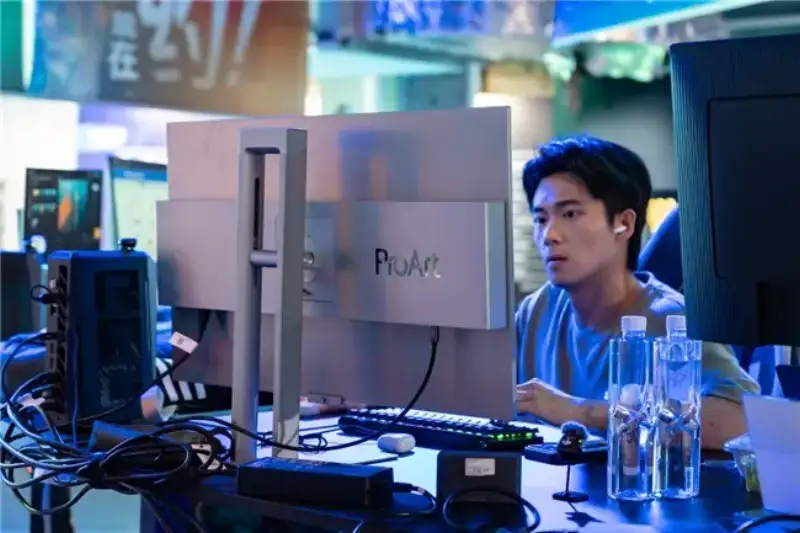
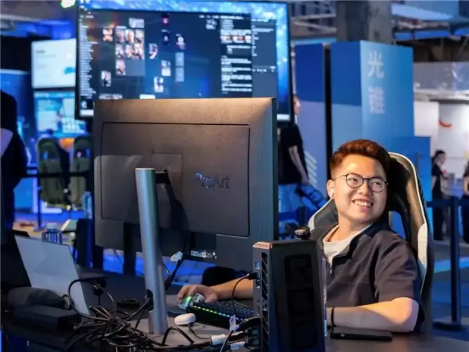
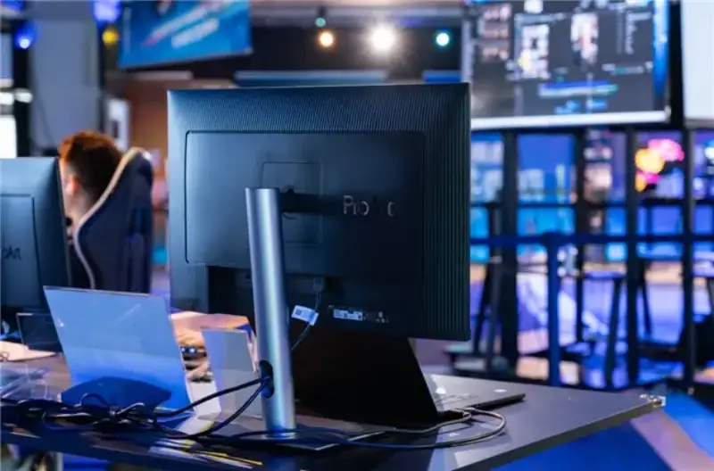

During the 28th Shanghai International Film Festival, ASUS ProArt became the official display partner of the "AI Film Set" section. It showed its full lineup of ProArt professional displays on the 4th floor on the west side of the Shanghai Film Art Center. At the AI film creation site, where visitors could walk through, talk, and experience, ProArt displays became a key visual device in the AI image-creation workflow. Through accurate color reproduction, strong high dynamic range, and AI computing support, they gave creators visual assurance from the first spark of inspiration to the final output.

Under the core idea that AI enters the set but the creator remains the lead, ASUS ProArt displays work with a 1+1 model of filmmaker plus AI super-creator. AI generates material and runs logic, while the creator makes aesthetic judgments and tells the story. The ProArt display plays the key role of true visual feedback. It ensures every AI-generated frame is shown accurately in color, contrast, and detail, and it lowers the chance of wrong creative calls caused by display error.

The on-site AI Film Set project, titled My Story, completed its full creation from concept to public screening on June 15. ProArt displays were involved throughout, from AI-assisted generation and material selection to editing and color grading. They gave the team a stable, reliable visual baseline and helped it produce high-quality work in a short time. All the outstanding works will stay on display until July 20. Visitors can see the real world of AI image creation up close at the fair.

Deeply integrated into the AI workflow, building an accurate visual baseline
In AI image creation, a display is not only an output terminal. It is a visual translator between the person and the AI. The event showed multiple models from the ASUS ProArt DreamPixel Pro and DreamPixel lines. They fit the needs of creators who use hardware calibration and those who use software calibration, and they offered hands-on experience. Built on hardware-grade color accuracy and strong high dynamic range, the displays fit the AI workflow deeply and set a reliable visual reference for AIGC content. When AI generates complex light-and-shadow scenes and smooth color transitions, the displays restore the full detail through professional color accuracy and a cinema-grade wide color gamut. This helps creators avoid the wrong calls that display error causes.
At the same time, the DreamPixel Pro displays support hardware calibration write-back, smart color-mode recognition, and multi-task split-screen management. This lets AI color grading, material preview, and final output flow seamlessly under one visual standard. It helps creators focus on aesthetic judgment and storytelling, and it builds an efficient AI workflow loop of what you see is what you get.

The ASUS ProArt DreamPixel Pro OLED professional display uses a 4K QD-OLED panel. It supports major HDR formats such as Dolby Vision, HLG, and HDR10. With strong clarity and contrast, it presents the highlight detail and shadow layers of AI high-dynamic-range material accurately. It effectively fixes common AI rendering problems such as blown highlights and crushed black shadows.
The ASUS ProArt DreamPixel Pro 32 professional display uses 4K resolution with 10-bit color depth, and it can show a billion colors. It has a built-in calibrator and supports both manual and automatic calibration. It also works with professional calibration software such as Calman and Light Illusion ColourSpace CMS. This strengthens hardware calibration and keeps color consistent through the AI grading workflow, so AI-created frames reach a cinema-grade color standard.
The ASUS ProArt DreamPixel Pro 27 professional display supports several color gamut modes, including DCI-P3 and Rec.2020. It fits the color preview needs of AI creation across film post-production, animation rendering, and digital content distribution.

The ASUS ProArt DreamPixel 6K display stands out in high-definition image quality. It uses 6K resolution and a new M Model-P3 color mode, so its color stays consistent with MacBook devices. It also has built-in Auto KVM, so a single keyboard and mouse can switch quickly between two external devices. The display integrates AI smart split-screen and multi-task management. Creators can run an AI generation tool, editing software, and a reference image at the same time. This improves human-machine collaboration and builds an integrated generate-preview-adjust workflow.
For the many users who connect a Mac, the ASUS ProArt DreamPixel 27 professional display has an M Model-P3 color mode. Its color fits the Mac ecosystem, and the 4K image shows all kinds of AI creations in fine detail.

As a leading 2K high-refresh display, the ASUS ProArt PA278QGV fits action-oriented AI image creation. It has a 120Hz refresh rate and a low-latency design, so AI-driven dynamic previews look smooth. It suits high-frame-rate work such as AI-generated 3D animation and real-time virtual-scene walkthroughs.
From the professional set to public experience, witnessing the future of AI creation
In the public interactive area of the AI Film Set, visitors could experience ProArt displays in real AI creation. They could see the full process of the display working with AI tools to raise efficiency and quality. Across AI-generated shorts, dynamic visual art, and interactive image works, ProArt displays used their what-you-see-is-what-you-get accuracy to become the core link between the creator's imagination and the AI's ability to generate.
The AI Film Set not only showed a range of high-quality AI image works. It also produced a mature AI collaboration workflow, a division of roles, and reference cases for creative judgment. From script concept and model training to material generation and final output, ProArt displays supported creators with professional performance as they keep exploring what AI images can be.